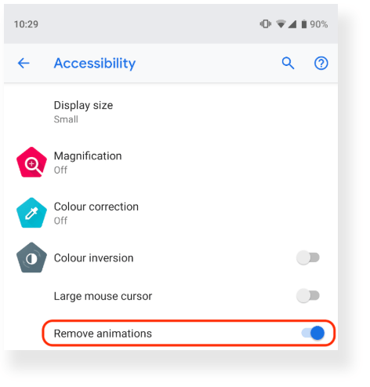
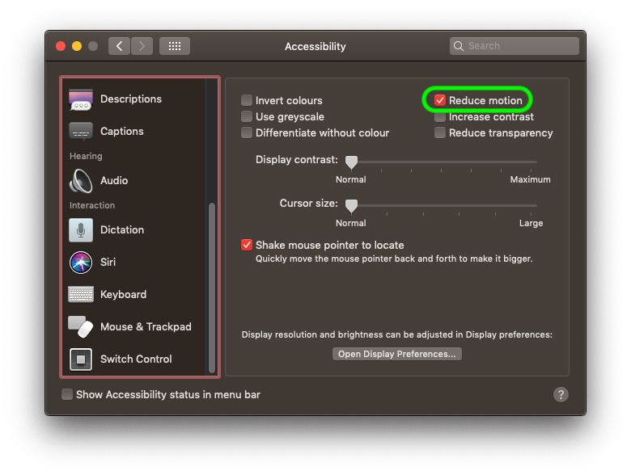
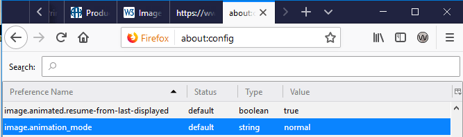
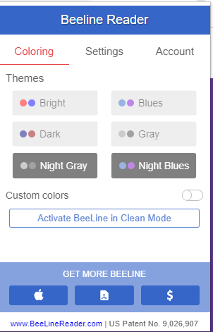
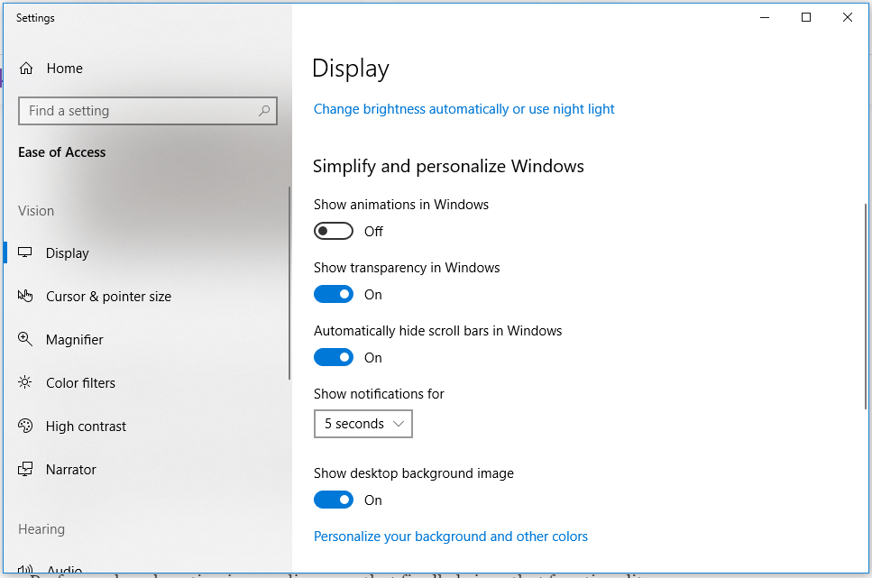
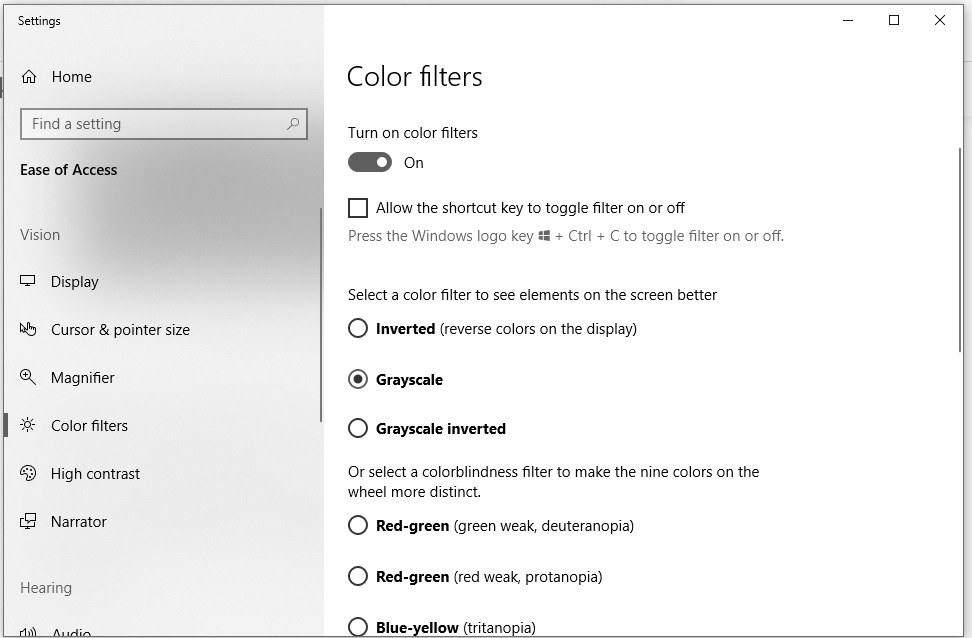

This article discusses making web content accessible for those with vestibular disorders, and those who support them, by taking advantage of personalization and accessibility settings built into the operating systems. Taking advantage of personalization settings can help prevent exposure to content leading to seizures and / or other physical reactions.
From the article, "Understanding Success Criterion 2.3.1: Three Flashes or Below Threshold"
"Flashing can be caused by the display, the computer rendering the image or by the content being rendered. The author has no control of the first two. They can be addressed by the design and speed of the display and computer"
Hardware and operating systems on many computers offer control that is not afforded to developers. The user can do much to protect himself by learning his operating system, its personalization and accessibility settings. Those in the public sector who must accommodate those with special sensitivities, should consider setting aside at least one work station and becoming familiar with its personalization and accessibility settings. Understanding personalization and accessibility settings can actually be a money-saving endeavor. One work station can be set up to accommodate both a low-vision individual (needs high-contrast) and to accommodate an individual with photosensitive susceptibilities, by, adjusting personalization and accessibility settings.
Firefox 73 and above (Desktop)
Firefox added support for CSS prefers-reduced-motion in October 2018.
Chrome 74 and above (Desktop)
Chrome 74 added support for reduced-motion-query, it has even added support to detect whether the user has requested a reduced motion experience. The user would access this through an accessibility interface, as seen below.

CSS Transition events are now supported. Examples include:
transitionruntransitionstarttransitionendtransitioncancelEdge 75 and above (Desktop, in Windows 10)
According to Eric Bailey, in his April 30, 2019 article Revisiting prefers-reduced-motion, the reduced motion media query, "While Microsoft Edge does not have support for prefers-reduced-motion, it will become Chrome under the hood soon."
Safari 10.1 and above (Desktop)
Do not enable Auto-Play (does not work for gifs)
iOS Safari 10.3 and above (Mobile and Tablet)
Select the "Reduce motion option" in OS Accessibility settings for Apple (image source: developers.google.com from Thomas Steiner's article "Move Ya! Or maybe, don't, if the user prefers-reduced-motion!"). This will not work on animated gifs; the source of the animation is self-contained within a gif and is not affected by these settings.
Use Reader Mode on browsers
Turn off animated GIFs in the browser
Browsers offer much power to their users; it's just a matter of knowing where to go. Using Firefox as an example, it explains that by changing the value the image.animation_mode from "normal" to "none", all animated images will be blocked. To reverse it, you will have to change the value back to "normal"

Use browser extensions

Most operating systems such as Windows 10, have accessibility options that are surprisingly powerful. Usually they are quite easy to find by typing ( or saying) in the word, "Accessibility" in the search finder of the operating system.
Turn off animations in the operating system
In the Windows10 operating system, the user has an ability to turn off animations. This will not work on animated gifs; the source of the animation is self-contained within a gif and is not affected by these settings..

Grayscale
Those who have suffered traumatic brain injury (TBI) may be highly sensitive to color; it can require such a great "investment of cognitive energy" on their part, there's no energy for other daily tasks. Enabling grayscale presentation of the content reduces the cognitive workload. It may assist users with other disabilities, as well. An interesting discussion by users on the benefits of using grayscale may be found in the discussion thread, "What is the “grayscale” setting for in accessibility options?". Of particular interest is a user who has Photosensitive Epilepsy, and uses it when feeling "seizure-y".
Most Operating Systems have a way to let the user make an adjustment on the workstation. In the screenshot below, you can see an example of Windows 10 Accessibility Settings allowing for color filters to be selected. Grayscale is enabled when the color filters button is toggled "on"

Contributors
Many, many thanks to Eric Eggert from Knowbility; for his discussions and huge help on this topic.